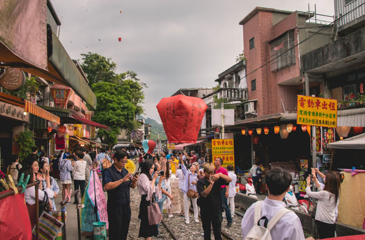
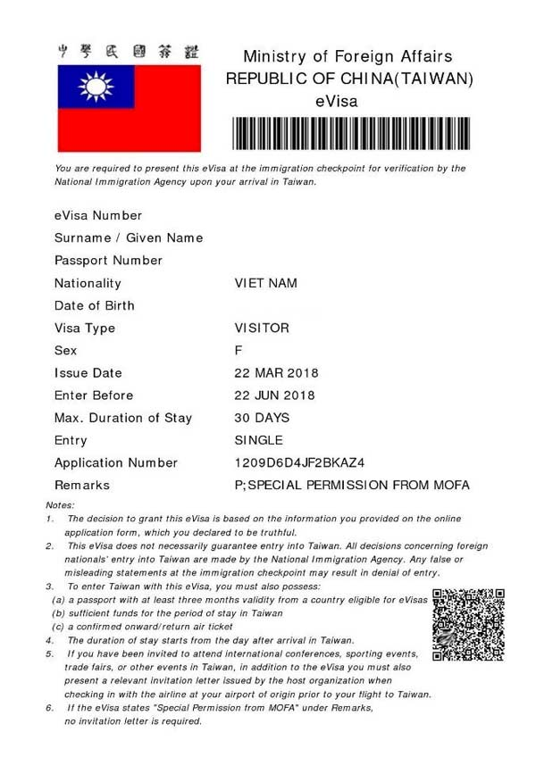

Hiện nay tour du lịch Đài Loan khởi hành từ Việt Nam đang được nhiều công ty du lịch chào bán với nhiều tuyến tour khác nhau cũng như giá cả khác nhau. Giá tour tốt, chính sách visa tiện lợi, mua tour dễ dàng,… nên nhiều du khách quyết định rất nhanh tuy nhiên thực tế để có những trải nghiệm tốt nhất cũng như tìm được tour đúng như cầu du khách cần lưu ý thêm một số vấn đề khi đặt tour đi Đài Loan.
Thông thường nhiều du khách chỉ quan tâm tới tên tour là Đài Loan và giá tour nên xảy ra một số vấn đề như:tour đi hành trình không như mong muốn, thời gian đi mệt,… Dưới đây là những ưu ý du khách cần biết khi đặt tour Đài Loan.
Một công ty du lịch muốn bán và tổ chức tour nước ngoài phải có giấy phép lữ hành quốc tế do Tổng cục du lịch cấp (bên cạnh giấy phép kinh doanh của công ty), khi mua tour nếu thấy lo lắng du khách có thể đề nghị xem giấy phép kinh doanh lữ hành quốc tế của công ty đó trước khi mua tour.
Tour Đài Loan được bán có thể là tour do công ty đó tổ chức hoặc tour do
nhiều công ty cùng bán và phối hợp tổ chức, về cơ bản không có gì khác
nhau nên du khách an tâm.

Đài Loan có nhiều điểm du lịch nổi tiếng với nhiều điểm tham quan hấp dẫn, tuỳ theo tour mà hành trình tham quan cũng khác nhau vì vậy du khách cần nên quan tâm là mình muốn đi đâu và tour mình hỏi đặt sẽ đi đâu.
Các điểm du lịch nổi tiếng ở Đài Loan trải dài từ nam lên bắc có thể kể là:
Tour Đài Loan không đi hết các điểm nói trên được mà thường chỉ chọn một
số điểm nhất định để ghé tham quan, du khách cần xem mình muốn đi đâu để
chọn chương trình tour cho phù hợp.
Có thể hỏi nhân viên bán tour để
được tư vấn thêm.
Tour đi tiện nhất là đi từ Nam lên Bắc (Từ Cao Hùng, Đài Nam đi lên Đài Bắc) một số tour đi ngược lại để có giá rẻ hơn tuy nhiên du khách cần nắm để chuẩn bị tâm lý cũng như lên kế hoạch khi mua sắm (mua sắm nhiều ở Đài Bắc).
Các tour đi Đài Loan hiện nay phổ biến là 4 ngày hoặc 5 ngày. Nếu tour 4 ngày thì sẽ là 4 ngày 4 đêm với 1 đêm ngủ trên máy bay, còn tour 5 ngày thì đi đúng 5 ngày 4 đêm với 4 đêm ngủ khách sạn. Khi mua tour du khách cần xem thông tin này để chủ động sắp xếp thời gian của mình.
Tour 4 ngày thường tranh thủ bay đêm để tiết kiệm thời gian và chi phí cho du khách tuy nhiên sáng hôm sau đến sẽ tham quan liền nên với những du khách không quen ngủ trên máy bay điều này sẽ hơi bất tiện.
Thông thường giá tour được công bố bao gồm tất cả các dịch vụ trên tour gồm vé máy bay, khách sạn, ăn uống, tham quan, bảo hiểm du lịch, visa,… Giá tour sẽ không bao gồm tiền tip (tiền bo) cho đội ngũ phục vụ, vé tham quan một số dịch vụ ngoài chương trình, chi phí cá nhân,…
Các chi phí về visa nếu người đi mang quốc tịch nước ngoài (gồm visa nhập cảnh Đài Loan, visa tái nhập Việt Nam), chi phí phòng đơn,… cũng không bao gồm trong giá tour.

Visa làm cho du khách khi đi tour Đài Loan phổ biến là visa quan hồng, thủ tục khá đơn giản: chỉ cần ảnh và hộ chiếu, một số trường hợp du khách sẽ được yêu cầu xác thực về tài chính. Nếu du khách có visa của các nước tiên tiến như Mỹ, Châu Âu, Úc, Nhật Bản, Hàn Quốc,…thì công ty du lịch sẽ làm e-visa cho du khách. Nếu du khách muốn có visa dán như thông thường thì phải làm hồ sơ riêng với nhiều thủ tục hơn và tốn thêm phí, điều này nếu đi theo tour thì không cần thiết lắm.
Về cơ bản du khách chỉ nộp hồ sơ theo tour, việc còn lại thì bên công ty du lịch sẽ làm cho du khách.
Kinh nghiệm: Những thông tin cần biết khi đi du lịch Châu Âu